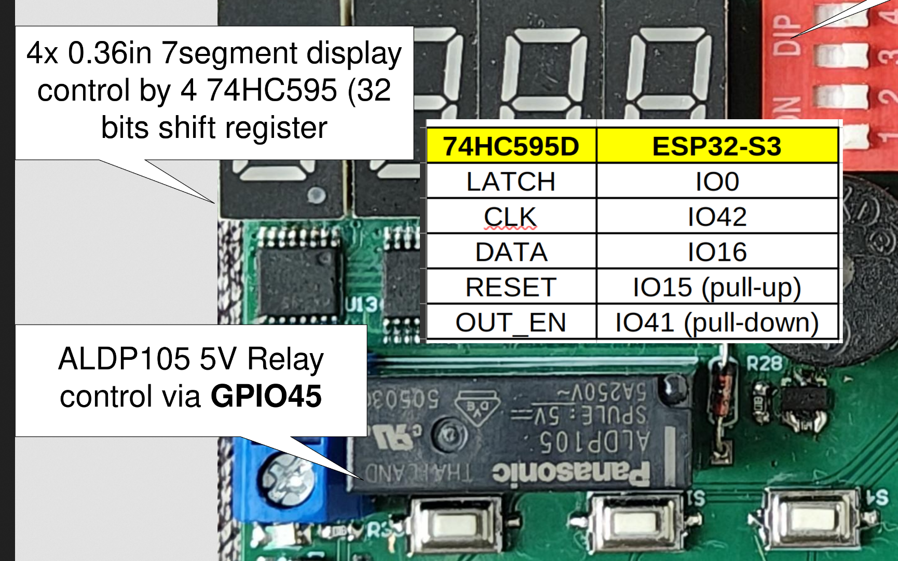
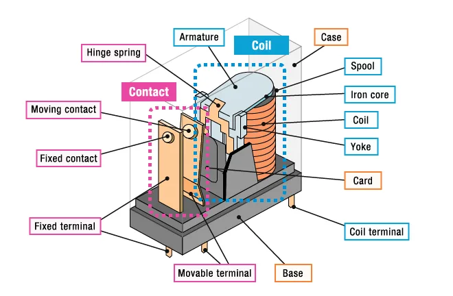
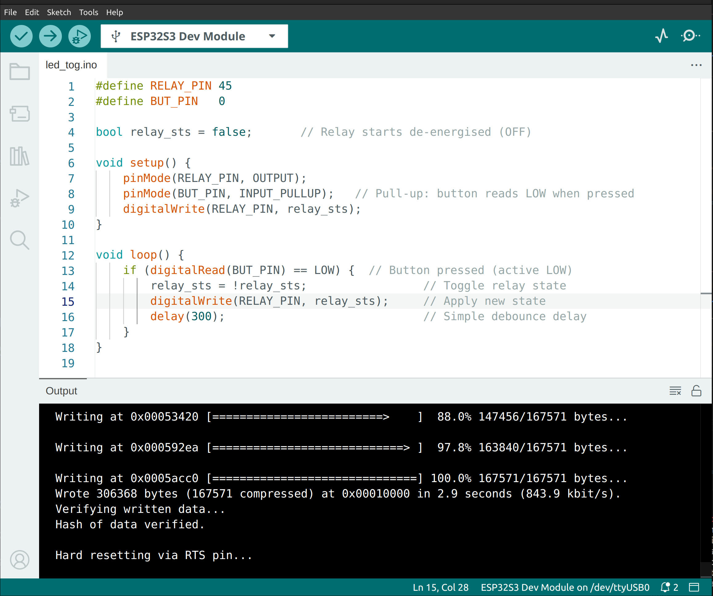

Project 2 : Control a Relay Using a Button#
Introduction#
In this project, you will learn how to control a relay module using a push button. A relay is an electrically operated switch that lets a low-power microcontroller safely switch high-power loads such as lamps, fans, or motors. By the end of this tutorial, you will know how to:
Drive a relay output from the MCU.
Use a single button to toggle the relay state ON and OFF.
Understand the difference between controlling a relay and controlling an LED.
Apply software debouncing to produce reliable button readings.
Requirements#
Before starting, make sure you have the following:
The STEAM development kit or The STEAM standalone microcontroller board
USB cable
Arduino IDE with ESP32 toolchain installed
All required components — the relay module and the push button — are already included on the STEAM development board. No external components are needed.
{kind=link}

The interfacing description of the relay#
The built-in relay is connected to GPIO45 and the built-in button is on GPIO0.
Note
The relay on the STEAM board is driven active HIGH: writing HIGH to GPIO45 energises the relay coil and closes the contact.
Note
The button reads logic LOW when pressed, because it is wired with a pull-up resistor to VCC. The code therefore uses INPUT_PULLUP and checks for a LOW reading.
Background: How a Relay Works#
A relay contains an electromagnetic coil and a mechanical switch. When the MCU drives the coil HIGH, the magnetic field pulls a metal armature and closes (or opens) an internal contact. This contact can switch a completely separate circuit at a much higher voltage or current than the MCU could handle directly.
Most relay modules include a flyback diode and a transistor driver, so you can connect the control pin directly to a GPIO pin with no additional components.

Internal structure of a relay#
The relay has three output terminals:
COM – Common terminal, always connected to your load circuit.
NO – Normally Open; the contact is open (disconnected) when the relay is off and closed when the relay is energised.
NC – Normally Closed; the contact is closed when the relay is off and open when it is energised.
Note
The Panasonic ALDP105 is a compact type relay, hence it only has NO contact.
Writing the Program#
Create a new sketch in the Arduino IDE and enter the following code:
#define RELAY_PIN 45
#define BUT_PIN 0
bool relay_sts = false; // Relay starts de-energised (OFF)
void setup() {
pinMode(RELAY_PIN, OUTPUT);
pinMode(BUT_PIN, INPUT_PULLUP); // Pull-up: button reads LOW when pressed
digitalWrite(RELAY_PIN, relay_sts);
}
void loop() {
if (digitalRead(BUT_PIN) == LOW) { // Button pressed (active LOW)
relay_sts = !relay_sts; // Toggle relay state
digitalWrite(RELAY_PIN, relay_sts); // Apply new state
delay(300); // Simple debounce delay
}
}
Note
INPUT_PULLUP enables the ESP32’s internal pull-up resistor on the button pin.
Without it, an unconnected input floats and causes random triggers.
Uploading the Program#
Connect the board to your computer using the USB cable.
Open the Arduino IDE.
Select ESP32S3 Dev Module from Tools → Board → esp32.
Select the correct serial port from Tools → Port.
Click the Upload button.
Wait until the upload is complete.

Expected Result#
After uploading the program to the board:
The relay is initially de-energised (OFF). You can confirm this by listening for a soft click when it first energises.
Each time the push button is pressed, the relay changes its state.
If the relay is OFF, pressing the button energises it (ON) — you should hear a click.
If the relay is ON, pressing the button de-energises it (OFF) — another click.
The 300 ms delay prevents multiple rapid toggles caused by mechanical button bounce.

How the Code Works#
``setup()``
The setup() function runs once when the ESP32 starts.
pinMode(RELAY_PIN, OUTPUT);
pinMode(BUT_PIN, INPUT_PULLUP);
digitalWrite(RELAY_PIN, relay_sts);
RELAY_PINis configured as an output to drive the relay coil.BUT_PINis configured asINPUT_PULLUPso the pin is held HIGH internally, and reads LOW only when the button is physically pressed.The relay is explicitly set to its initial state at startup to ensure a known starting condition.
``loop()``
The loop() function executes continuously.
First, the program checks whether the button is pressed. Because of the pull-up, a pressed button reads LOW:
if (digitalRead(BUT_PIN) == LOW) {
If the button is pressed, the relay state variable is inverted and immediately written to the relay pin:
relay_sts = !relay_sts;
digitalWrite(RELAY_PIN, relay_sts);
Finally, a 300 ms delay keeps the code inside the if block long enough to ride out any contact bounce from the button:
delay(300);
Because the state is written inside the if block (only on button press), the relay output does not flicker between presses.
Relay vs LED — Key Differences#
Property |
LED (Project 1) |
Relay (this project) |
|---|---|---|
Output pin voltage |
~3.3 V drives LED directly |
3.3 V drives relay coil via transistor on module |
Active level (STEAM board) |
HIGH = ON |
HIGH = coil energised |
Audible feedback |
None |
Click on state change |
Can switch AC loads |
No |
Yes (via NO/NC terminals) |
Controlled variable |
|
|
Experiment#
Try modifying the program to deepen your understanding.
Change the debounce delay from
300ms to100ms or500ms and observe how the button response feels.Start with the relay energised by initialising the state variable to
true:bool relay_sts = true;
Implement edge-detection debouncing for a more responsive button. Instead of waiting 300 ms after every press, track whether the button was released before acting again:
#define RELAY_PIN 45 #define BUT_PIN 0 bool relay_sts = false; bool last_button = HIGH; // Released state void setup() { pinMode(RELAY_PIN, OUTPUT); pinMode(BUT_PIN, INPUT_PULLUP); digitalWrite(RELAY_PIN, relay_sts); } void loop() { bool current_button = digitalRead(BUT_PIN); // Act only on the falling edge (HIGH → LOW transition) if (last_button == HIGH && current_button == LOW) { relay_sts = !relay_sts; digitalWrite(RELAY_PIN, relay_sts); delay(50); // Short settle time only } last_button = current_button; }
With edge detection, holding the button down does not keep toggling the relay — it toggles exactly once per press.
Add Serial output to monitor state changes:
Serial.begin(115200); // Inside the toggle block: Serial.println(relay_sts ? "Relay ON" : "Relay OFF");
Open the Serial Monitor (Tools → Serial Monitor, 115200 baud) to see messages each time the relay changes state.
Summary#
In this tutorial, you learned how to use a push button to control a relay. The program reads the button state on every loop iteration and, on each press, inverts a Boolean variable that tracks whether the relay should be energised. That variable is then written directly to the relay pin.
Key concepts covered include:
Configuring GPIO pins as OUTPUT and INPUT_PULLUP.
Reading an active-LOW button correctly using
== LOW.Controlling a relay using digitalWrite().
Using a Boolean variable to track relay state.
Toggling a variable with the logical NOT (
!) operator.Using a debounce delay (and an optional edge-detection approach) to prevent unintended multiple toggles.
Understanding the physical difference between an LED output and a relay output.
This project extends the digital input/output foundation from Project 1 and introduces relay-based load switching — a common building block in home automation, industrial control, and embedded systems.